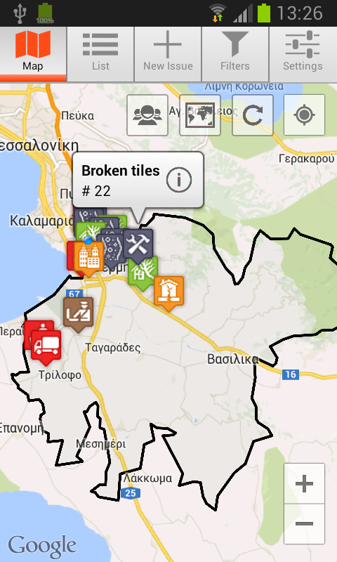
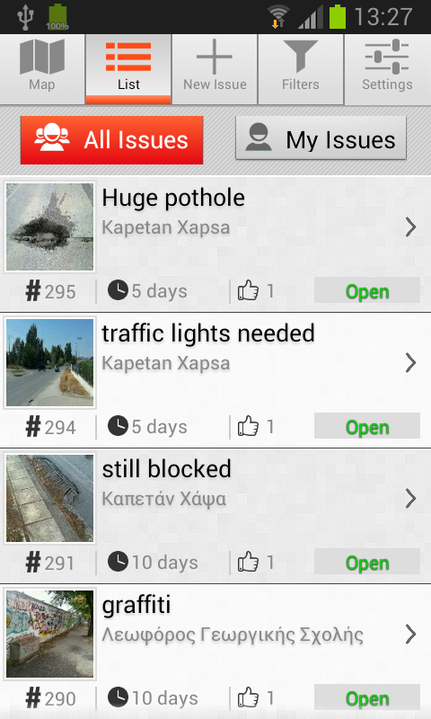
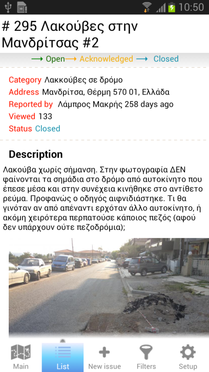
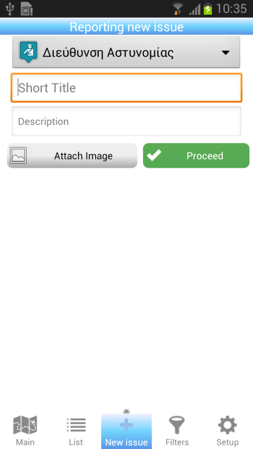
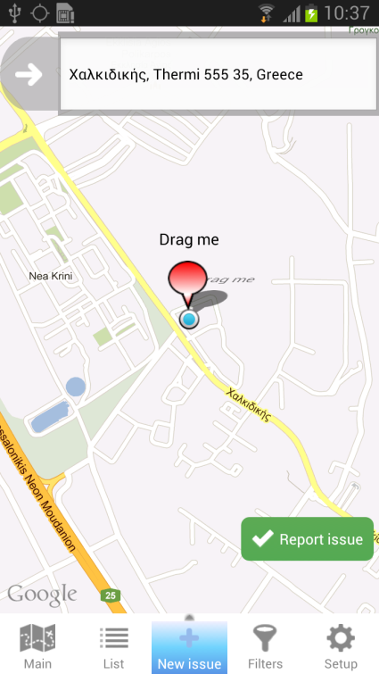
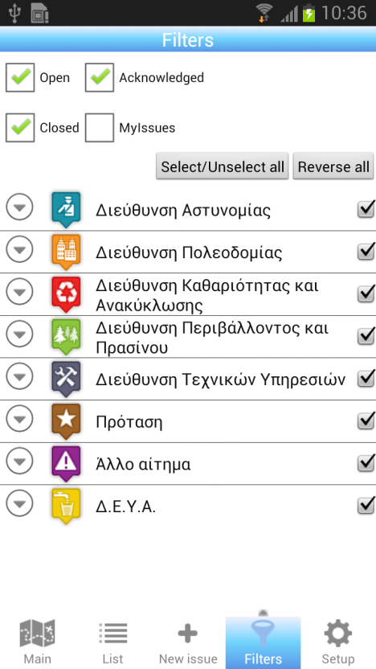
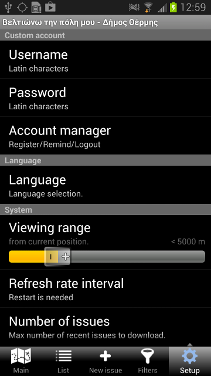
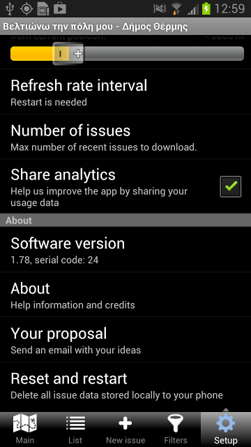

The Android mobile version of the web-based ImproveMyCity application
The application contains a splash screen where the user can login, register or enter as a guest and five tabs that define five different views, namely the “Main” tab that is a map-based view of the issues, the “List” tab that is a list-based view of the issues, the “New issue” that is the reporting form for submitting an issue, “Filters” that is a list of options to filter the issues that appear in the “Main” and “List” views, and “Setup” which is a list of options related to login, language, viewing distance and others.
The splash screen acts as a container of the municipality’s logo and allows the user to either login with his\her credentials (the credentials obtained through the web-version are also valid), register for a new account, be reminded of his\her password, or enter as a guest. By entering as a guest the user has access to all functionalities apart from submitting a new issue, or commenting\voting on the existing issues.
In figure 1, the “Main” view can be seen. Markers represent city issues. Each marker has its own bitmap that indicates the category that the issue belongs to. The button named as “Normal” is a toggle button that has two states namely “Normal” and “Satellite” to serve as a switch between the two Google map views. “Refresh” button refreshes the city issues data according to the latest timestamp of the database, a process that it is usually called as synchronization. All data except from issue comments, is stored locally in an Android SQLite database so that the software maintains a partial operability when the mobile is offline.
In figure 2, a screenshot of the “List” view is presented. The list provides a summary for each issue containing: title, image, serial number, address, status, votes, and timestamp. Depending on the progress for resolving the reported issue the “status” field can take three different flags, namely Open, Acknowledged, and Closed.
Issues in “Main” or “List” views are clickable. Upon clicking on an icon or an item in the list, the “Single issue” view appears. A screenshot of “Single issue” view is shown in 3. Detailed information contains additionally the issue author, the viewing times of the issue in the web application, the description of the issue, the photo of the issue in larger size, a button that shows the issue solely on the map, any comments by local authorities/registered users/author, a button to vote for an issue (activated only for registered users).
The reporting of a new issue is a two step process. These steps are presented in figure 4. First, the category of the issue should be chosen. The categories are downloaded and updated, according to the timestamp of categories, from the server and stored locally in the mobile. The title and the description of the issue should be written. The button named as “Image” is for shooting or selecting an image from the storage data card. The button “Proceed” is for proceeding to the second step, the geographic localization of the issue. The localization is performed by dragging an icon over the map. The address is found from the longitude and latitude information with reverse geocoding provided by Google. Address can be also written manually when the automatic localization information is wrongly defined. The button “Report issue” executes reporting and uploads the issue to the database of public administration.
“Filters” tab is used for filtering the issues that appear in either the map-based or list-based views. Issues can be filtered by: status (e.g. open, acknowledged or closed); by logged-in user (by ticking “My Issues” only the issues submitted from the logged-in user will appear), and by category. Buttons “select/unselect all” and “Reverse all” are for massively alternating the status of the category filters.
“Setup” tab contains a list of options grouped in “User account”, “Language”, “System”, and “About”. Under the “User account” the user can perform the ordinary account management operations such as Login/Register/Remind/Logout. In performing registration for a new account take into consideration that password is limited to 16 characters. “Language” allows for selecting the menu language between Greek and English. Data that comes from the remote database (i.e. the server) is not translated.
The “Viewing range” is a horizontal bar that can be modified from 100 meters to Infinity (∞) for selecting downloading range, e.g. 5000 m (Default value) means that only the issues that are in a radius of 5000 meters around the user’s current position are downloaded. “Refresh rate interval” is the time interval in minutes that a check of the timestamp of the remote database is performed, e.g. 5 minutes (Default value) denotes that a check is performed every 5 minutes and if timestamps of the local with the remote database are not identical then a synchronization of the databases is performed. “Number of issues” is the number of issues to download starting from the most recent and going backwards into time, e.g. 40 issues (Default value) means that the 40 most recent issues will be downloaded and become available in the “Main” and “List” views. “Share analytics” is a switch to activate/deactivate the statistics captured from the app about its usage, e.g. time spend per session. The default state is “On” so that there is a feedback to the designers of the app about how to improve specific parts of it. Finally, the last group of functionalities under the title “About” contains: a) the currently installed version of the application, b) some information about the application and the development team, c) a button titled “Your proposal” that activates an e-mail client such as android gmail application in order to write your comments about the app and send it to the developers, and d) a button titled “Reset and restart” that performs an initialization of the app. It can be used when a malfunction appears due to bad internet connection or any other interruption factor, e.g. low battery.